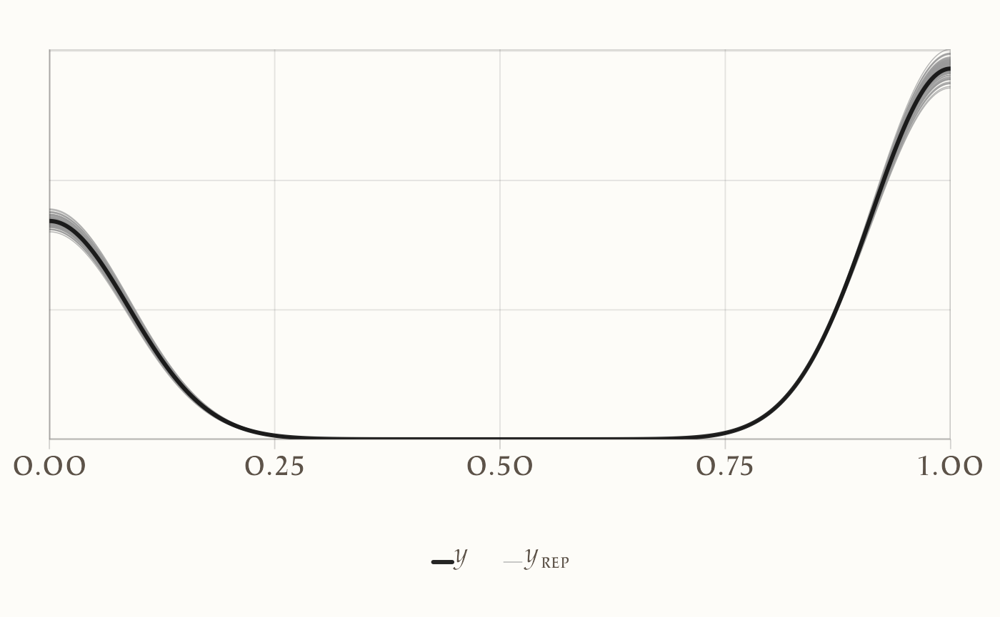

here::here("code", "_common.R") |>
source()
# Load packages
if (!requireNamespace("pacman")) install.packages("pacman")
pacman::p_load(brms, cmdstanr, posterior, brms, bayestestR, insight, conflicted)
conflicts_prefer(posterior::mad)39 Dal GLM a un modello processuale per dati binari
Introduzione
La regressione logistica è lo strumento di riferimento per analizzare esiti binari \(y\in\{0,1\}\) in funzione di predittori osservabili \(\mathbf{x}\). Fin qui l’abbiamo usata come GLM statico, assumendo osservazioni indipendenti, effetti invarianti nel tempo e un unico meccanismo generativo. Queste ipotesi sono utili per molti problemi, ma diventano limitanti quando vogliamo descrivere processi psicologici dinamici, in cui la risposta osservata è l’esito momentaneo di stati interni che si evolvono nel tempo.
Esempi classici: in un compito ripetuto, la risposta al trial \(t\) può dipendere dall’esito al trial \(t-1\) (rinforzo, frustrazione, fatica), così come da stati latenti che variano lentamente (motivazione, attenzione). Il GLM logit standard non “vede” questa history dependence: tratta ogni risposta come se nascesse da zero. Per catturare la dimensione temporale, introduciamo una variabile latente continua \(u_{i,t}\) — la propensione interna a rispondere “1” del soggetto \(i\) al tempo \(t\) — e le permettiamo di portare memoria del passato:
\[ \Pr(y_{i,t}=1\mid u_{i,t})=\operatorname{logit}^{-1}(u_{i,t}), \qquad u_{i,t}= \alpha_i + \mathbf{x}_{i,t}^\top\boldsymbol\beta + \phi\,u_{i,t-1} + \eta_{i,t}. \]
Qui \(\alpha_i\) cattura la propensione media soggetto-specifica, \(\boldsymbol\beta\) gli effetti dei predittori, \(\phi\) la persistenza dinamica (quanta parte dello stato passato sopravvive), e \(\eta_{i,t}\) il rumore di processo. Se \(\phi=0\), torniamo al GLM statico; se \(\phi\neq 0\), modelliamo esplicitamente la dipendenza seriale.
In questo capitolo mostreremo come passare dal GLM logit a un modello processuale autoregressivo (AR) su scala logit, implementato in Stan. Partiremo da un’interpretazione latente del logit, introdurremo l’AR(1) e la sua estensione AR(\(K\)) per memorie più lunghe, simuleremo dati per verificare il recupero dei parametri e confronteremo le stime con un GLMM logit (via brms). Vedremo che distinguere tra effetto dei predittori (\(\boldsymbol\beta\)) e dinamica interna (\(\phi\)) è essenziale per evitare stime distorte e per ancorare l’analisi statistica a ipotesi psicologiche sui meccanismi che generano il comportamento.
L’obiettivo di questo capitolo è mostrare come, con Stan, sia possibile esplicitare il meccanismo generativo delle risposte, superando i limiti della regressione logistica classica e introducendo la nozione di processi dinamici autoregressivi che meglio riflettono la natura temporale dei fenomeni psicologici.
Panoramica del capitolo
- Introduzione ai modelli dinamici in psicologia, superando i limiti dei GLM statici.
- La regressione logistica classica reinterpretata attraverso variabili latenti e soglie.
- Estensione al modello AR(1) per catturare la dipendenza temporale e la “memoria” del passato.
- Implementazione pratica in Stan, con simulazione dati e confronto con modelli statici (GLMM).
- Evidenza che i modelli processuali dinamici forniscono stime più fedeli ai meccanismi generativi.
39.1 Dal modello statico al modello processuale
39.1.1 La regressione logistica classica
Nel modello di regressione logistica (GLM logit) la probabilità di osservare una risposta positiva è:
\[ \Pr(y_i=1 \mid \mathbf{x}_i) = \operatorname{logit}^{-1}\!\left(\alpha + \mathbf{x}_i^\top \boldsymbol\beta\right). \]
Qui:
- \(\alpha\) è l’intercetta, che rappresenta la tendenza di base a rispondere 1;
- \(\boldsymbol\beta\) descrive come i predittori osservati influenzano questa probabilità.
Un modo intuitivo per interpretare la formula è introdurre una variabile latente continua \(u_i\), che possiamo pensare come la propensione interna dell’individuo a rispondere “1”:
\[ u_i = \alpha + \mathbf{x}_i^\top \boldsymbol\beta + \varepsilon_i, \qquad \varepsilon_i \sim \text{Logistic}(0,1). \]
La regola di decisione è semplice:
- se \(u_i > 0\) allora osserviamo \(y_i=1\),
- se \(u_i \leq 0\) allora osserviamo \(y_i=0\).
In altre parole, immaginiamo che l’individuo abbia una soglia fissa: quando la propensione supera questa soglia, la risposta osservata diventa positiva.
Possiamo pensare a \(u_i\) come a un “serbatoio di propensione”: se il livello supera la soglia, si osserva una risposta positiva. Nei modelli statici il serbatoio si svuota e si riempie indipendentemente a ogni trial; nei modelli dinamici, invece, il livello attuale dipende anche da quanto era pieno al trial precedente.
Nella regressione logistica classica, questa soglia è sempre costante nel tempo e uguale per tutti i trial. Ma nei processi psicologici reali ciò non è sempre realistico: la soglia decisionale (o l’intensità della propensione) può cambiare da un momento all’altro, ad esempio per effetto di apprendimento, fatica o variazioni di motivazione.
Ed è proprio da qui che nasce la necessità di estendere il modello logit statico a un modello dinamico, in cui la variabile latente \(u\) (e talvolta anche la soglia) possa variare nel tempo e riflettere la natura evolutiva dei processi psicologici.
39.2 Oltre il GLM: dinamica temporale
Nella regressione logistica classica abbiamo visto che ogni risposta osservata \(y_i\) può essere pensata come il risultato di una propensione latente \(u_i\), confrontata con una soglia fissa. Questa impostazione funziona bene se consideriamo le osservazioni come indipendenti e isolate.
Ma in psicologia le cose vanno spesso diversamente:
- negli esperimenti con prove ripetute, le decisioni prese oggi sono influenzate da quelle appena fatte;
- nelle misurazioni longitudinali (EMA), lo stato emotivo o motivazionale di un momento dipende in parte da quello precedente;
- nei compiti di apprendimento, l’esperienza accumulata modifica gradualmente la propensione a scegliere un’opzione rispetto a un’altra.
In tutti questi casi, è naturale immaginare che la variabile latente \(u_{i,t}\) non nasca da zero a ogni prova, ma porti memoria del passato.
39.3 Il modello AR(1)
Per rendere esplicita la dipendenza dal passato, usiamo un modello autoregressivo di ordine 1 (AR(1); Chatfield & Xing (2019)):
\[ \begin{aligned} u_{i,t} &= \alpha_i + \mathbf{x}_{i,t}^\top \boldsymbol\beta + \phi \, u_{i,t-1} + \eta_{i,t}, & \eta_{i,t} \sim \mathcal{N}(0,\sigma_u), \\[6pt] y_{i,t} \mid u_{i,t} &\sim \text{Bernoulli}\!\left(\operatorname{logit}^{-1}(u_{i,t})\right). \end{aligned} \]
Possiamo immaginare \(u_{i,t}\) come il livello di un “serbatoio di propensione”: se questo valore supera la soglia implicita dello 0 sulla scala logit, la risposta osservata è positiva \((y_{i,t}=1)\). La novità rispetto al modello statico è che il livello attuale \(u_{i,t}\) dipende anche da quello precedente \(u_{i,t-1}\), attraverso il termine \(\phi u_{i,t-1}\).
Significati dei parametri del modello AR(1):
\(\alpha_i\) (intercetta soggetto-specifica): propensione media di un individuo (es. uno studente molto ansioso potrebbe avere più probabilità di rispondere “no”).
\(\beta\) (effetto dei predittori): effetto di variabili osservabili (es. domande più facili aumentano la probabilità di risposta corretta).
-
\(\phi\) (persistenza dinamica): quanta parte dello stato passato sopravvive:
- se \(\phi=0\), nessuna memoria: ogni risposta è “indipendente”,
- se \(\phi>0\), inerzia: un successo ieri aumenta la probabilità di successo oggi,
- se \(\phi<0\), alternanza: un successo ieri rende più probabile un errore oggi (pattern a zig-zag).
\(\sigma_u\) (variabilità del processo): irregolarità: se grande, le traiettorie diventano rumorose (es. risposte altalenanti per distrazioni).
Un piccolo schema concettuale aiuta a visualizzare:
u(t-1) ──▶ u(t) ──▶ y(t)
│
└─────────── φ ───────────┘Per esempio:
- \(\alpha_i\): uno studente particolarmente ansioso potrebbe avere un’alta probabilità di rispondere “no” a prescindere dalla domanda;
- \(\beta\): se la domanda è facile (\(x=1\)), aumenta la probabilità di risposta corretta;
- \(\phi\): se lo studente ha risposto correttamente ieri, oggi sarà più probabile che risponda ancora correttamente;
- \(\sigma_u\): cattura la variabilità inspiegata, come distrazioni improvvise.
39.3.1 Che cos’è \(u_{i,t}\)?
- \(u_{i,t}\) non è osservato: è uno stato latente.
- Possiamo pensarlo come il “livello di propensione” di un individuo in un certo istante \(t\).
- L’osservazione \(y_{i,t}\) (corretto/errato, sì/no, 1/0) nasce da questo stato: se \(u_{i,t}\) è alto, la probabilità di risposta positiva è alta; se è basso, è bassa.
- Nei modelli Bayesiani o di stato latente, i valori di \(u_{i,t}\) non si calcolano direttamente dai dati ma vengono stimati/inferiti dal modello. In pratica, otteniamo una distribuzione a posteriori su ciascun \(u_{i,t}\), non un singolo valore deterministico.
39.3.2 E il ruolo di \(\phi\)?
Il coefficiente \(\phi\) funziona come un “peso di memoria”:
- Se \(\phi = 0\), il passato non conta: \(u\_{i,t}\) dipende solo dai predittori e dal rumore.
- Se \(\phi > 0\), c’è inerzia: lo stato precedente influenza positivamente quello attuale.
- Se \(\phi < 0\), c’è compensazione o alternanza: uno stato alto ieri spinge verso uno basso oggi.
Formalmente, \(\phi\) è un coefficiente di regressione come \(\alpha\) e \(\beta\), ma agisce sulla variabile latente del tempo precedente, quindi introduce dipendenza temporale.
39.3.3 Come “si trovano” i valori di \(u_{i,t-1}\)?
- All’inizio (al tempo \(t=1\)), bisogna specificare una condizione iniziale per \(u_{i,0}\), ad esempio assumendo \(u_{i,0} \sim \mathcal{N}(0,\sigma_0)\).
- Per i tempi successivi, ogni \(u_{i,t}\) viene costruito ricorsivamente dal precedente: il modello stesso definisce la sequenza degli stati latenti.
- In fase di stima (ad esempio con Stan), si usano i dati osservati \(y_{i,t}\) per inferire a posteriori quali valori plausibili di \(u_{i,t}\) rendono il modello coerente con le risposte osservate.
Riassumendo:
- \(u_{i,t}\): stato latente, stimato dal modello, non osservato.
- \(\phi\): coefficiente che regola quanto lo stato passato influenza quello presente.
- \(\alpha_i\), \(\beta\): intercetta e predittori osservati, come in una regressione logistica.
- \(\sigma_u\): variabilità residua del processo latente.
39.3.4 Perché è importante?
Con il modello AR(1) facciamo un passo oltre la regressione logistica classica. La probabilità di risposta non è più determinata solo dai fattori esterni osservati, ma anche dagli stati interni accumulati nel tempo. In altre parole, il comportamento osservato non nasce “da zero” a ogni prova: porta con sé una traccia del passato.
Esempi concreti aiutano a capirlo:
- Compito di apprendimento: se un partecipante ha appena ricevuto un rinforzo positivo, la sua propensione a ripetere la stessa scelta sarà più alta al trial successivo.
- Diario EMA: un umore negativo oggi aumenta la probabilità di trovarsi in uno stato simile anche domani, a meno che un evento esterno intervenga a interrompere la continuità.
La lezione fondamentale è questa: le scelte non sono indipendenti, ma intrecciate con la storia recente dell’individuo. Ed è proprio questa “memoria del passato” che rende i modelli dinamici strumenti più realistici e potenti per descrivere processi psicologici rispetto ai modelli statici.
39.4 Dall’AR(1) all’AR(K)
Il modello AR(1) ci ha mostrato che lo stato latente \(u_{i,t}\) non nasce mai da zero, ma porta con sé una traccia del passato immediato. Tuttavia, in molti processi psicologici questa “memoria a un passo” può essere troppo corta.
Pensiamo a situazioni in cui:
- l’effetto di un’esperienza non si esaurisce al trial successivo ma dura più a lungo,
- l’umore di oggi non dipende solo da quello di ieri, ma anche da quello di due o tre giorni fa,
- l’apprendimento si accumula su una coda di feedback estesa.
In questi casi conviene estendere il modello ad un processo autoregressivo di ordine \(K\) (AR(K)):
\[ u_{i,t} = \alpha_i + \mathbf{x}_{i,t}^\top \boldsymbol\beta + \phi_1 u_{i,t-1} + \phi_2 u_{i,t-2} + \dots + \phi_K u_{i,t-K} + \eta_{i,t}, \] \[ \eta_{i,t} \sim \mathcal{N}(0,\sigma_u). \]
39.4.1 Interpretazione psicologica
- \(K=1\) (AR(1)) → memoria cortissima: il presente dipende solo dallo stato immediatamente precedente (es. l’effetto diretto di un feedback appena ricevuto).
- \(K=2\) (AR(2)) → memoria breve: lo stato attuale risente degli ultimi due passi (es. l’umore influenzato dagli ultimi due giorni consecutivi).
- \(K \geq 3\) → memoria più lunga: utile per processi cumulativi o ciclici (es. oscillazioni tra fasi di alta e bassa motivazione).
In altre parole, aumentando \(K\) allarghiamo la “finestra temporale” che il modello utilizza per spiegare il presente.
39.4.2 Perché è utile?
L’estensione ad AR(K) consente di modellare una gamma più ricca di dinamiche:
- inerzia semplice (AR(1)),
- effetti ritardati, che emergono dopo due o più step,
- oscillazioni regolari o pattern ciclici (catturabili già con un AR(2) o AR(3)).
Così il modello diventa più flessibile e aderente alla complessità dei processi psicologici reali, nei quali la memoria del passato non ha sempre la stessa profondità, ma può essere breve, prolungata o ciclica.
39.5 Simulazione dati
Prima di stimare il modello su dati reali, conviene costruire un dataset simulato (AR(1) logit a livello latente). In questo modo possiamo verificare se il modello riesce a recuperare parametri noti e comprendere meglio il suo funzionamento.
Immaginiamo \(I=100\) soggetti, ciascuno con \(T=30\) prove, e un predittore binario \(x_{i,t}\) (ad esempio: tipo di stimolo, 0 = neutro, 1 = emozionale). Lo stato latente \(u_{i,t}\) evolve come un AR(1) sulla scala logit.
set.seed(123)
I <- 100 # numero di soggetti
Tt <- 30 # numero di trial per soggetto
N <- I*Tt # osservazioni totali
# Parametri "veri" usati per generare i dati
alpha_mu <- 0.0 # intercetta media
alpha_sigma <- 0.7 # variabilità tra-soggetti
beta_true <- 0.6 # effetto del predittore
phi_true <- 0.5 # persistenza dinamica
sigma_u <- 0.6 # rumore di processo
# Intercette soggetto-specifiche
alpha_i <- rnorm(I, alpha_mu, alpha_sigma)
# Predittore binario (0/1) random
x <- rbinom(N, 1, 0.5)
# Costruzione dataset
df <- tibble::tibble(
id = rep(1:I, each = Tt),
t = rep(1:Tt, times = I),
x = x
)
# Stato latente e risposta
u <- numeric(N)
y <- integer(N)
for (i in 1:I) {
a <- alpha_i[i]
ui <- numeric(Tt)
for (tt in 1:Tt) {
idx <- (i-1)*Tt + tt
mean_ut <- a + beta_true*df$x[idx] + ifelse(tt == 1, 0, phi_true*ui[tt-1])
ui[tt] <- rnorm(1, mean_ut, sigma_u) # stato latente
p <- 1/(1 + exp(-ui[tt])) # probabilità risposta
y[idx] <- rbinom(1, 1, p) # risposta binaria
}
u[((i-1)*Tt+1):(i*Tt)] <- ui
}
df$u_lat <- u
df$y <- yIl modello ha bisogno di sapere quale osservazione viene prima nello stesso soggetto. Se non stiamo attenti, potremmo collegare l’ultimo trial del soggetto \(i\) con il primo del soggetto \(i+1\), il che è sbagliato. Per evitare errori, creiamo un indice prev che punta al trial precedente solo dello stesso soggetto. Se non esiste (primo trial), mettiamo 0.
Esempio: se il soggetto 5 ha 30 trial, per il trial 12 prev punterà al trial 11, mentre per il trial 1 avrà valore 0.
39.6 Tabella-ponte: dall’algebra a Stan
Per tradurre il modello matematico in Stan, costruiamo una “mappa” dei concetti.
| Concetto | Simbolo | Stan | Nota |
|---|---|---|---|
| Numero osservazioni | \(N\) | int<lower=1> N; |
|
| Numero soggetti | \(I\) | int<lower=1> I; |
|
| Soggetto per trial | — | array[N] int<lower=1,upper=I> id; |
|
| Trial precedente (stesso soggetto) | — | array[N] int<lower=0,upper=N> prev; |
0 se non esiste |
| Predittori | \(\mathbf{x}_{i,t}\) | array[N] int x; |
Estendibile a matrice |
| Risposta | \(y_{i,t}\) | array[N] int y; |
Bernoulli |
| Stato latente | \(u_{i,t}\) | vector[N] u; |
|
| Intercetta soggetto | \(\alpha_i\) |
vector[I] alpha; (non centrato) |
|
| Persistenza | \(\phi\) | real<lower=-0.99,upper=0.99> phi; |
vincolo stazionarietà |
| Rumore di processo | \(\sigma_u\) | real<lower=0> sigma_u; |
deviazione standard |
39.7 Modello Stan
Ora traduciamo il modello AR(1) logit in Stan. L’idea è di rappresentare esplicitamente tre parti del processo:
Intercette soggetto-specifiche (\(\alpha_i\)), stimate in forma non centrata per migliorare la mescolanza della catena.
-
Evoluzione dello stato latente \(u_{i,t}\):
- al primo trial di ciascun soggetto, \(u_{i,1}\) dipende solo dall’intercetta, dai predittori e dal rumore;
- nei trial successivi, \(u_{i,t}\) dipende anche dal valore precedente \(u_{i,t-1}\), con peso \(\phi\).
Likelihood: la risposta osservata \(y_{i,t}\) segue una Bernoulli logit con parametro \(u_{i,t}\).
Inoltre, nel blocco generated quantities calcoliamo:
-
y_rep= repliche simulate, utili per i posterior predictive check; -
log_lik= contributi della verosimiglianza, necessari per il calcolo di LOO/WAIC.
Formalmente, il modello implementato è:
\[ \begin{aligned} u_{i,1} &\sim \mathcal{N}(\alpha_i + \mathbf{x}_{i,1}^\top \beta, \sigma_u), \\ u_{i,t} &\sim \mathcal{N}(\alpha_i + \mathbf{x}_{i,t}^\top \beta + \phi u_{i,t-1}, \sigma_u) \quad (t>1), \\ y_{i,t} \mid u_{i,t} &\sim \text{Bernoulli}\!\left(\operatorname{logit}^{-1}(u_{i,t})\right). \end{aligned} \]
stan_code <- '
data{
int<lower=1> N;
int<lower=1> I;
array[N] int<lower=1,upper=I> id;
array[N] int<lower=0,upper=1> x; // estendibile a vettore
array[N] int<lower=0,upper=1> y;
array[N] int<lower=0,upper=N> prev; // 0 se non esiste trial precedente dello stesso soggetto
}
parameters{
vector[I] alpha_raw;
real alpha_mu;
real<lower=0> alpha_sigma;
real beta;
real<lower=-0.99, upper=0.99> phi;
real<lower=0> sigma_u;
vector[N] eps; // innovazioni standard N(0,1)
}
transformed parameters{
vector[I] alpha = alpha_mu + alpha_sigma * alpha_raw;
vector[N] u;
for (n in 1:N){
real mean_u = alpha[id[n]] + beta * x[n];
if (prev[n] == 0) {
// opzionale: condizione stazionaria per il primo trial
real sd1 = sigma_u / sqrt(1 - square(phi));
u[n] = mean_u + sd1 * eps[n];
} else {
u[n] = mean_u + phi * u[prev[n]] + sigma_u * eps[n];
}
}
}
model{
// Priori più informative (vedi §2)
alpha_raw ~ normal(0, 1);
alpha_mu ~ normal(0, 0.5);
alpha_sigma ~ normal(0, 0.5); // <lower=0> già impone metà-normale
beta ~ normal(0, 0.5);
phi ~ normal(0, 0.4); // bounds già imposti
sigma_u ~ normal(0, 0.5); // metà-normale su sd
eps ~ normal(0,1); // innovazioni standard
y ~ bernoulli_logit(u);
}
generated quantities{
array[N] int y_rep;
vector[N] log_lik;
for (n in 1:N){
y_rep[n] = bernoulli_logit_rng(u[n]);
log_lik[n] = bernoulli_logit_lpmf(y[n] | u[n]);
}
}
'
stan_file <- write_stan_file(stan_code)Focalizziamoci sul blocco di codice che costruisce la variabile latente dinamica \(u_n\) su cui poi si basa la likelihood logistica dei dati osservati \(y_n\).
Struttura della likelihood. Il modello assume che la risposta osservata \(y_n \in \{0,1\}\) derivi da una regressione logistica:
\[ y_n \sim \text{Bernoulli}\!\left(\operatorname{logit}^{-1}(u_n)\right), \]
dove \(u_n\) è il predittore lineare dinamico che evolve nel tempo con memoria AR(1). In pratica, invece di avere un predittore statico \(u_n = \alpha_i + \beta x_n\), qui aggiungiamo una dipendenza dal passato: lo stato latente corrente dipende anche da quello precedente.
Costruzione di \(u_n\) nel codice:
for (n in 1:N){
real mean_u = alpha[id[n]] + beta * x[n];
if (prev[n] == 0) {
// primo trial del soggetto
real sd1 = sigma_u / sqrt(1 - square(phi));
u[n] = mean_u + sd1 * eps[n];
} else {
// trial successivi
u[n] = mean_u + phi * u[prev[n]] + sigma_u * eps[n];
}
}-
Linea 1. Calcoliamo il contributo sistematico del soggetto e del predittore:
\[ \texttt{mean\_u} = \alpha_{id[n]} + \beta x_n. \]
Qui \(\alpha_{id[n]}\) è l’intercetta specifica del soggetto, mentre \(\beta x_n\) è l’effetto del predittore osservato.
-
Caso
prev[n]==0. È il primo trial di quel soggetto. Non abbiamo uno stato precedente a cui agganciarci, quindi inizializziamo \(u_n\) assumendo la condizione stazionaria del processo AR(1):\[ u_n \sim \mathcal N\!\left(\texttt{mean\_u}, \; \frac{\sigma_u^2}{1-\phi^2}\right). \]
Questo è implementato come
mean_u + sd1 * eps[n], doveeps[n] ~ Normal(0,1)esd1 = sigma_u / sqrt{1 - phi^2}. -
Caso
prev[n]!=0. È un trial successivo. In questo caso \(u_n\) dipende dal valore precedente \(u_{prev[n]}\):\[ u_n = \texttt{mean\_u} + \phi \, u_{prev[n]} + \sigma_u \, \varepsilon_n, \quad \varepsilon_n \sim \mathcal N(0,1). \]
Qui \(\phi\) è il coefficiente AR(1) che controlla quanto del passato sopravvive nel presente.
Intuizione:
- \(\alpha_i\): propensione media del soggetto.
- \(\beta x_n\): effetto del predittore osservato al trial \(n\).
- \(\phi u_{prev[n]}\): memoria: se ieri \(u\) era alto, oggi tenderà a restare alto (se \(\phi>0\)).
- \(\sigma_u \varepsilon_n\): rumore nuovo che introduce variabilità tra un trial e l’altro.
Il risultato finale è che la probabilità di risposta positiva è:
\[ \Pr(y_n=1) = \operatorname{logit}^{-1}(u_n), \]
e l’intera likelihood del modello è:
\[ p(y \mid \alpha, \beta, \phi, \sigma_u) = \prod_{n=1}^N \text{Bernoulli}\!\left(y_n \,\middle|\, \operatorname{logit}^{-1}(u_n)\right), \]
dove ciascun \(u_n\) è costruito ricorsivamente come sopra.
Generazione dei dati di input:
stan_dat <- list(
N = nrow(df),
I = length(unique(df$id)),
id = as.integer(df$id),
x = as.array(as.integer(df$x)),
y = as.array(as.integer(df$y)),
prev = as.array(prev)
)Compilazione del modello:
mod <- cmdstanr::cmdstan_model(stan_file)Campionamento:
fit <- mod$sample(
data = stan_dat,
seed = 2024,
chains = 4, parallel_chains = 4,
iter_warmup = 1500, iter_sampling = 1500,
adapt_delta = 0.99,
max_treedepth = 15
)Riassunto dei parametri chiave:
fit$summary(c("alpha_mu","alpha_sigma","beta","phi","sigma_u"))
#> # A tibble: 5 × 10
#> variable mean median sd mad q5 q95 rhat ess_bulk ess_tail
#> <chr> <dbl> <dbl> <dbl> <dbl> <dbl> <dbl> <dbl> <dbl> <dbl>
#> 1 alpha_mu 0.104 0.098 0.099 0.094 -0.047 0.275 1.004 1146.168 1890.425
#> 2 alpha_sigma 0.691 0.684 0.116 0.114 0.517 0.895 1.002 936.525 2046.042
#> 3 beta 0.609 0.607 0.094 0.095 0.456 0.770 1.000 2591.209 4164.984
#> 4 phi 0.492 0.495 0.069 0.068 0.374 0.601 1.001 1218.997 2733.870
#> 5 sigma_u 0.695 0.691 0.187 0.176 0.393 1.004 1.005 381.850 561.846Lettura dei risultati.
Confrontiamo i valori stimati con quelli usati nella simulazione:
\(\alpha_\mu\) (vero = 0.0) → stimato ≈ 0.10. L’intercetta media è molto vicina al valore vero, con intervallo che comprende lo 0. La stima è quindi ben calibrata.
\(\alpha_\sigma\) (vero = 0.7) → stimato ≈ 0.69. La variabilità tra soggetti è recuperata quasi perfettamente. Questo mostra che il modello distingue bene la propensione media dei soggetti dalle loro differenze individuali.
\(\beta\) (vero = 0.6) → stimato ≈ 0.61. L’effetto del predittore viene stimato con grande precisione, centrato sul valore vero.
\(\phi\) (vero = 0.5) → stimato ≈ 0.49. Anche il parametro di persistenza dinamica è correttamente recuperato: la memoria del passato è catturata in linea con i dati generati.
\(\sigma_u\) (vero = 0.6) → stimato ≈ 0.69. Il rumore di processo è leggermente sovrastimato, ma rimane molto vicino al valore usato nella simulazione.
In sintesi, il modello MCMC recupera in modo accurato tutti i parametri simulati. Le diagnostiche (Rhat ≈ 1, ESS elevati, nessuna divergenza) confermano che la catena ha esplorato bene lo spazio dei parametri.
39.7.1 Diagnostica e Posterior Predictive Check
Un passo fondamentale è confrontare i dati osservati con quelli simulati dal modello (y_rep). Se il modello è adeguato, le distribuzioni delle repliche devono sovrapporsi a quella dei dati reali.
yrep_draws <- fit$draws("y_rep")
# Converte in data.frame e poi in matrice
yrep_df <- as_draws_df(yrep_draws)
yrep_mat <- as.matrix(yrep_df[, grepl("^y_rep", names(yrep_df))])
# proporzione osservata
prop_obs <- mean(stan_dat$y)
# proporzioni replicate (una per draw)
prop_rep <- rowMeans(yrep_mat)
ppc_dens_overlay(y = stan_dat$y, yrep = yrep_mat[1:100, ])
Il posterior predictive check mostra che la distribuzione dei dati simulati dal modello (y_rep) si sovrappone bene a quella dei dati osservati (y).
- La densità osservata (linea nera) cade quasi sempre all’interno del ventaglio di densità replicate (linee colorate).
- Questo significa che il modello riesce a generare dati che “assomigliano” a quelli reali, un segnale che la struttura autoregressiva AR(1) e i parametri stimati catturano i meccanismi principali del processo.
- Se vedessimo sistematiche discrepanze (ad esempio code troppo corte o una distribuzione spostata), sarebbe un campanello d’allarme che il modello è mal specificato o che mancano variabili importanti.
In sintesi: un buon PPC non prova che il modello sia vero, ma aumenta la fiducia che sia plausibile e che descriva i dati in modo coerente con le ipotesi teoriche.
39.8 Confronto con GLMM logit (via brm)
Per confronto abbiamo stimato lo stesso dataset con un GLM logit semplice in brm:
dat <- tibble(
y = as.numeric(stan_dat$y),
x = as.numeric(stan_dat$x),
id = as.numeric(stan_dat$id)
)# ATTENZIONE: brms ignora la dipendenza seriale e l'eterogeneità nei trials!
fit_glmer <- brm(
y ~ x + (x | id),
data = dat,
family = bernoulli(link = "logit"),
prior = c(prior(normal(0, 1), class = "b")),
chains = 2, iter = 2000, seed = 123,
backend = "cmdstanr"
)summary(fit_glmer)
#> Family: bernoulli
#> Links: mu = logit
#> Formula: y ~ x + (x | id)
#> Data: dat (Number of observations: 3000)
#> Draws: 2 chains, each with iter = 2000; warmup = 1000; thin = 1;
#> total post-warmup draws = 2000
#>
#> Multilevel Hyperparameters:
#> ~id (Number of levels: 100)
#> Estimate Est.Error l-95% CI u-95% CI Rhat Bulk_ESS Tail_ESS
#> sd(Intercept) 1.20 0.11 1.00 1.44 1.00 608 1062
#> sd(x) 0.13 0.10 0.00 0.37 1.00 552 821
#> cor(Intercept,x) -0.09 0.55 -0.95 0.92 1.00 2199 1438
#>
#> Regression Coefficients:
#> Estimate Est.Error l-95% CI u-95% CI Rhat Bulk_ESS Tail_ESS
#> Intercept 0.42 0.13 0.17 0.68 1.01 347 630
#> x 0.50 0.09 0.32 0.69 1.00 2547 1579
#>
#> Draws were sampled using sample(hmc). For each parameter, Bulk_ESS
#> and Tail_ESS are effective sample size measures, and Rhat is the potential
#> scale reduction factor on split chains (at convergence, Rhat = 1).39.8.1 Interpretazione dei risultati brm
Il modello multilevel logit con slope/intercetta casuali, \(y \sim x + (x \mid id)\), stima:
- Intercept = 0.42 (SE ≈ 0.13): log-odds media di risposta 1 quando \(x=0\), considerando la variabilità tra soggetti.
- \(x = 0.50\) (SE ≈ 0.09; 95% CI [0.32, 0.69]): effetto medio del predittore sulla log-odds, con pooling parziale tra soggetti.
Eterogeneità tra soggetti:
- sd(Intercept) ≈ 1.20: forte variabilità individuale nella propensione di base.
- sd(x) ≈ 0.13: variabilità più contenuta nell’effetto di \(x\).
- cor(Intercept, x) ≈ −0.09 con IC molto ampio: nessuna evidenza di relazione sistematica tra tendenza di base e sensibilità al predittore.
Il modello, quindi, distingue l’effetto medio di \(x\) dalla notevole eterogeneità individuale, ma non rappresenta esplicitamente la dipendenza seriale tra prove.
39.8.2 Confronto con Stan (modello processuale AR(1))
Il modello AR(1) in Stan, stimato sugli stessi dati simulati, recupera accuratamente i valori veri:
- \(\beta \approx 0.61\) (vero = 0.60),
- \(\phi \approx 0.49\) (vero = 0.50),
- \(\alpha_\sigma \approx 0.69\) (vero = 0.70),
- \(\sigma_u \approx 0.69\) (vero = 0.60).
La differenza principale riguarda l’effetto di \(x\):
- Nel GLMM multilevel, \(\hat\beta \approx 0.50\),
- Nel modello processuale AR(1), \(\hat\beta \approx 0.61\), perfettamente in linea con il valore vero.
Questo accade perché il modello brm controlla l’eterogeneità individuale ma non rappresenta la dinamica temporale: la memoria del passato (\(\phi\)) resta non modellata e una parte della dipendenza seriale viene assorbita nelle stime delle varianze casuali o nell’effetto medio del predittore.
Il modello in Stan, invece, separa esplicitamente il contributo del predittore (\(\beta\)) dalla persistenza dinamica (\(\phi\)) e dal rumore di processo (\(\sigma_u\)), producendo stime più fedeli al meccanismo generativo.
39.8.3 Messaggio chiave
- Il GLMM con slope/intercette casuali cattura bene l’eterogeneità tra soggetti, ma non la dipendenza temporale.
- Il modello AR(1) in Stan, introducendo la dinamica degli stati latenti, fornisce un effetto di \(x\) più vicino al valore vero e una rappresentazione più realistica del processo psicologico sottostante.
Riflessioni conclusive
In questo capitolo abbiamo superato i limiti del GLM logit statico introducendo una struttura dinamica sugli stati latenti. L’idea chiave è semplice e potente: la probabilità di risposta non dipende solo da \(\mathbf{x}\), ma anche da ciò che è appena accaduto, tramite lo stato \(u_{i,t}\) che accumula informazioni nel tempo. Con l’AR(1) (ed estensioni AR(\(K\))) abbiamo reso esplicita la memoria del processo; con Stan abbiamo separato in modo netto propensione media (\(\alpha_i\)), effetto dei predittori (\(\boldsymbol\beta\)), persistenza (\(\phi\)) e rumore di processo (\(\sigma_u\)), ottenendo stime fedeli al meccanismo generativo.
Il confronto con un GLMM logit ha chiarito il punto: i modelli multilevel gestiscono bene l’eterogeneità tra soggetti, ma se la dipendenza temporale non è rappresentata, parte della dinamica viene assorbita in varianze casuali o negli effetti medi, distorcendo l’interpretazione. I posterior predictive checks hanno confermato che il modello processuale riproduce le caratteristiche salienti dei dati, aumentando la fiducia nella sua adeguatezza.
Il messaggio metodologico è duplice:
- Statisticamente, i GLM restano un quadro unificante, ma vanno estesi quando la struttura dei dati lo richiede: nei compiti ripetuti, nelle misure EMA, nei processi di apprendimento o affaticamento, la storia conta.
- Psicologicamente, passare a un modello processuale significa spostarsi dalla descrizione all’ipotesi sui meccanismi: ciò che stimiamo non è solo “se un predittore influisce”, ma come l’influenza si accumula, persiste o si alterna nel tempo.
Nei capitoli successivi useremo questa logica per ampliare la modellazione di processi cognitivi e decisionali: la dinamica latente diventerà il filo conduttore che collega il dato osservato al processo che lo ha generato.
Bibliografia
Chatfield, C., & Xing, H. (2019). The analysis of time series: an introduction with R. Chapman; hall/CRC.